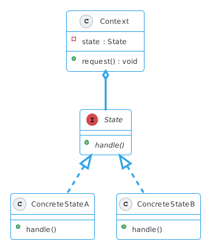
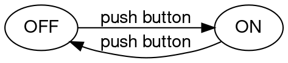
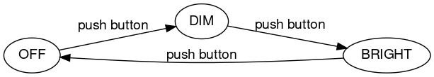
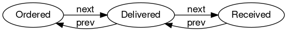

State Pattern#
Een manier om het gedrag van een object aan te passen bij de verandering van een interne staat. Het object lijkt daarmee zijn klasse te wijzigen.
Implementatie#

De Context is waar clients mee te maken hebben. Op basis van een (veranderlijke) State zal het op basis van de aanroep van een request de handle methode aanroepen van het huidige state object.
Gebruik#
Als een object zich verschillend moet gedragen afhankelijk van een specifieke toestand (state)
Het aantal states groot is, en de state-specifieke code vaak verandert
State machines#
Het state pattern heeft veel te maken finite state machines, of eindigetoestandsautomaat, waar een systeem zich op enig moment in een bepaalde toestand kan bevinden en waar mogelijke overgangen tussen deze toestanden en bijbehorende acties zijn beschreven.
Een heel eenvoudig voorbeeld is een aan- of uitknop.

In dit geval zijn maar twee toestanden mogelijk, aan of uit. Een (wederzijdse) overgang van een toestand naar een ander is hier mogelijk door middel van de actie, “push button”. Laten we deze twee toestanden en handeling uitwerken in een concrete implementatie om licht aan en uit te zetten.
public class Light {
final static int OFF = 0;
final static int ON = 1;
private int state = OFF;
public void pushButton() {
if (state == OFF) {
state = ON;
System.out.println("Light switched on");
} else if (state == ON) {
state = OFF;
System.out.println("Light switched off");
}
}
}
De klasse Light heeft twee mogelijke toestanden, OFF en ON. De huidige toestand wordt bewaard in de variabele state (en zal verwijzen naar óf het veld OFF, óf naar het veld ON) en de beginwaarde is OFF.
De overgang van de ene naar de andere toestand (de handeling of actie) is beschreven in de methode pushButton.
Light light = new Light();
light.pushButton()
Light switched on
De initiële staat was OFF, met de druk op de kop is deze nu gewijzigd naar ON.
light.pushButton()
Light switched off
Een volgende aanroep zal de toestand weer terugzetten naar OFF.
Een uitbreiding#

Je kan jezelf misschien een uitbreiding van deze toestanden kunnen voorstellen, bijvoorbeeld de backlight van toetsenborden hebben soms drie toestanden, uit, gedimd, of volle sterkte.
public class Light {
final static int OFF = 0;
final static int DIM = 1;
final static int BRIGHT = 2;
private int state = OFF;
public void pushButton() {
if (state == OFF) {
state = DIM;
System.out.println("Dimmed light");
} else if (state == DIM) {
state = BRIGHT;
System.out.println("Bright light");
} else if (state == BRIGHT) {
state = OFF;
System.out.println("Light switched off");
}
}
}
Light light = new Light()
light.pushButton()
Dimmed light
light.pushButton()
Bright light
light.pushButton()
Light switched off
We hebben hier nu drie toestanden gedefinieerd, maar wat zou het betekenen als we meer toestanden zouden willen toevoegen? Of meer acties? Bijvoorbeeld overgangen van 1 tot en met 100 procent lichtsterkte? De conditie waar we op moeten testen zal steeds uitgebreider gaan worden … (en daarmee onze code).
Track & Trace#

De staat van een bestelling is een ander voorbeeld. Als een pakket is besteld (ordered) dan is het klaar voor verzending en op weg naar het postkantoor. Eenmaal daar aangekomen dan wijzigt de toestand naar afgeleverd (delivered). Tot slot zal het pakket door de bezorgdienst worden afgeleverd bij de klant (received). Het is ook mogelijk om naar een vorige staat terug te keren, indien nodig.
public class Package {
private static int ORDERED = 0;
private static int DELIVERED = 1;
private static int RECEIVED = 2;
private int state = ORDERED;
public void next() {
if (state == ORDERED) {
state = DELIVERED;
System.out.println("Package delivered");
} else if (state == DELIVERED) {
state = RECEIVED;
System.out.println("Package recieved");
} else if (state == RECEIVED) {
System.out.println("Package already received");
}
}
public void prev() {
if (state == ORDERED) {
System.out.println("Already in initial state");
} else if (state == DELIVERED) {
state = ORDERED;
System.out.println("Package ordered");
} else if (state == RECEIVED) {
state = DELIVERED;
System.out.println("Package delivered");
}
}
public void printStatus() {
if (state == ORDERED) {
System.out.println("Package ready for post office");
} else if (state == RECEIVED) {
System.out.println("Package delivered to post office");
} else if (state == DELIVERED) {
System.out.println("Package recieved by customer");
}
}
}
Uitbreiden#
Een nieuwe state toevoegen, wat is nodig?
Stel je wilt een RETURNED state toevoegen om aan te geven dat de klant het pakket heeft teruggestuurd, wat is daar voor nodig? Je zult in alle drie de methoden de condities moeten uitbreiden. Je kan je voorstellen dat met elke volgende nieuwe staat de code steeds minder flexibel en uitbreidbaar wordt.
“encapsulate what varies” (state)
“favor composition” (delegate behaviour)
Isoleer wat veranderlijk is. Dat is in dit geval de staat, en alles wat daar bij hoort (acties en overgangen). Delegeer vervolgens handelingen naar de staat, dit wordt de rol van de context.
State#
public interface State {
public void prev(Package pkg);
public void next(Package pkg);
public void printStatus();
}
Wat varieert zijn de acties die relevant zijn voor een bepaalde staat, deze kunnen we vastleggen in een interface.
public class OrderedState implements State {
public void next(Package pkg) {
pkg.setState(new DeliveredState());
}
public void prev(Package pkg) {
System.out.println("Already in initial state");
}
public void printStatus() {
System.out.println("Package ready for post office");
}
}
Vervolgens kunnen we concrete implementaties maken voor elke staat. Een volgende staat wordt als een bericht doorgegeven aan de context.
public class DeliveredState implements State {
public void next(Package pkg) {
pkg.setState(new ReceivedState());
}
public void prev(Package pkg) {
pkg.setState(new OrderedState());
}
public void printStatus() {
System.out.println("Package delivered to post office");
}
}
public class ReceivedState implements State {
public void next(Package pkg) {
System.out.println("Package already received");
}
public void prev(Package pkg) {
pkg.setState(new DeliveredState());
}
public void printStatus() {
System.out.println("Package recieved by customer");
}
}
Context#
bevat een staat
delegeert handelingen naar de staat
Clients hebben niet direct te maken een staat, de context delegeert de handelingen op basis van de staat waarin het zich op dat moment in bevindt.
public class Package {
private State state = new OrderedState();
public void setState(State state) {
this.state = state;
}
public void previousState() {
state.prev(this);
}
public void nextState() {
state.next(this);
}
public void printStatus() {
state.printStatus();
}
}
De klasse Package kan nu sterk vereenvoudigd worden, het hoeft niet specifiek te weten welke toestanden en overgangen mogelijk zijn, deze zijn gedefinieerd in concrete State imlementaties.
Package pkg = new Package()
pkg.printStatus()
Package ready for post office
pkg.nextState()
pkg.printStatus()
Package delivered to post office
pkg.nextState()
pkg.printStatus()
Package recieved by customer
Een complexer voorbeeld#
In een game kan een speler handelingen verrichten
De mogelijke handelingen worden beperkt door een staat

een speler kan handelingen verrichten (
attack,fireBomb, etc.)de handelingen worden beperkt door de staat (healthy, survival, dead).
Gamedefinieert de context (stateenplayer)de actie is
gameAction, die wordt gedelegeerd naaractionvanState
De klasse Player#
public class Player {
public void attack() {
System.out.println("Attack");
}
public void fireBomb() {
System.out.println("Fire Bomb");
}
public void fireGunblade() {
System.out.println("Fire Gunblade");
}
public void fireLaserPistol() {
System.out.println("Laser Pistols");
}
public void firePistol() {
System.out.println("Fire Pistol");
}
public void survive() {
System.out.println("Surviving!");
}
public void dead() {
System.out.println("Dead! Game Over");
}
}
State#
public interface PlayerState {
public void action(Player player);
}
Concrete states#
public class HealthyState implements PlayerState {
@Override
public void action(Player player) {
player.attack();
player.fireBomb();
player.fireGunblade();
player.fireLaserPistol();
}
}
public class SurvivalState implements PlayerState {
@Override
public void action(Player player) {
player.survive();
player.firePistol();
}
}
public class DeadState implements PlayerState {
@Override
public void action(Player player) {
player.dead();
}
}
Context#
public class Game {
private PlayerState state = null;
private Player player = new Player();
public void setState(PlayerState state) {
this.state = state;
}
public void gameAction() {
state.action(player);
}
}
Testen#
Game context = new Game();
context.setState(new HealthyState());
context.gameAction();
Attack
Fire Bomb
Fire Gunblade
Laser Pistols
context.setState(new SurvivalState());
context.gameAction();
Surviving!
Fire Pistol
context.setState(new DeadState());
context.gameAction();
Dead! Game Over